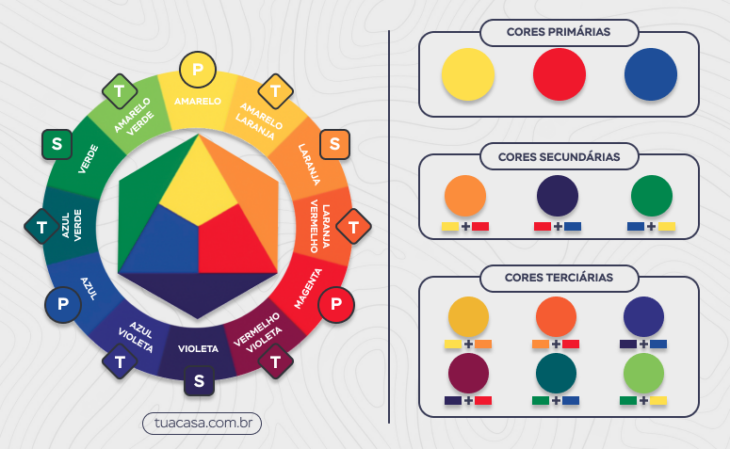
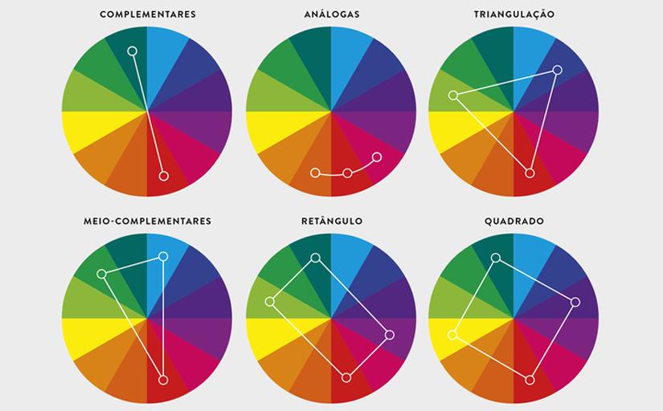

A teoria das cores é um campo de estudo que explora como as cores interagem e como percebemos e
interpretamos suas combinações. Ela descreve as propriedades das cores, suas relações e os
efeitos que elas produzem em nós. Compreender a teoria das cores vai ser de grande ajuda para
que você consiga utilizar bem as cores em desenhos, pinturas e outras formas de arte visual.
O que preciso saber?
Existem alguns elementos-chave na teoria das cores:

- Cores primárias: São as cores básicas que não podem ser obtidas por meio da mistura de
outras cores. As cores primárias tradicionais são o vermelho, o amarelo e o azul. Elas são
usadas como base para criar todas as outras cores.
- Cores secundárias: São obtidas pela mistura igual de duas cores primárias. As cores
secundárias mais comuns são o laranja (vermelho + amarelo), o verde (amarelo + azul) e o
roxo (vermelho + azul).
- Cores terciárias: São obtidas pela mistura de uma cor primária com uma cor secundária
adjacente. Por exemplo, vermelho + laranja resulta em um tom de vermelho mais claro.
- Círculo cromático: É uma representação circular das cores, organizadas de acordo com suas
relações e combinações. O círculo cromático ajuda a visualizar as relações entre as cores e
a criar esquemas harmoniosos. Ele também pode ser dividido em cores quentes (vermelho,
laranja, amarelo) e cores frias (azul, verde, roxo).
Circulo cromático
Dentro do círculo cromático, podemos explorar duas relações principais: cores análogas e cores
complementares.
Cores análogas são cores que estão próximas umas das outras no círculo cromático. Essas cores
compartilham uma tonalidade semelhante e tendem a criar uma harmonia suave quando usadas juntas.
Por exemplo, as cores análogas do azul podem ser o azul-verde e o azul-violeta. Ao usar cores
análogas em um desenho, você pode criar uma paleta coesa e equilibrada.
Cores complementares são aquelas que estão diretamente opostas umas às outras no círculo
cromático. Essas combinações criam um contraste forte e vibrante. As cores complementares tendem
a se destacar uma da outra e podem ser usadas para chamar a atenção para elementos específicos
em um desenho. Alguns exemplos de combinações de cores complementares incluem vermelho e verde,
amarelo e roxo, e azul e laranja.

Relações do círculo cromático
Aplicações
Ao aplicar a teoria das cores em desenhos, podemos explorar e desenvolver habilidades em:
- Harmonia de cores: Ao entender as relações entre as cores no círculo cromático, você pode
criar harmonia em seus desenhos. Cores adjacentes no círculo cromático, como azul e verde,
criam uma sensação de calma e tranquilidade. Cores complementares, que estão diretamente
opostas no círculo cromático, como vermelho e verde, criam contrastes vibrantes.
- Equilíbrio visual: O uso adequado de cores pode ajudar a criar equilíbrio visual em um
desenho. Por exemplo, áreas grandes e escuras podem ser equilibradas com pequenos detalhes
em cores brilhantes.
- Foco e destaque: Cores vibrantes podem ser usadas para atrair o olhar do observador para uma
área específica do desenho. Ao contrastar cores fortes com cores mais neutras, é possível
criar um ponto focal poderoso.
- Simbolismo e expressão: As cores têm associações e significados simbólicos que variam
culturalmente. A escolha cuidadosa das cores pode adicionar camadas de significado e
expressão emocional ao seu desenho.
- Iluminação e atmosfera: As cores também podem ser usadas para criar efeitos de iluminação e
transmitir uma determinada atmosfera. Cores mais quentes, como tons de laranja e amarelo,
podem sugerir uma iluminação ensolarada, enquanto cores mais frias, como azul e roxo, podem
criar uma atmosfera mais sombria ou noturna.
Lembre-se de que a teoria das cores é uma ferramenta útil, mas também é importante explorar e
experimentar. Cada artista tem sua própria interpretação e estilo na aplicação das cores.
Portanto, permita-se ser criativo e descobrir novas combinações e efeitos visuais. A prática e a
observação das cores ao seu redor também ajudarão a aprimorar suas habilidades na aplicação das
cores em seus desenhos.